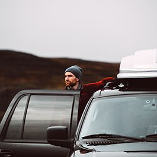

Необыкновенный Алтай

Россия удивительна для путешествий, чтобы увидеть одновременную зеленую Швейцарию и одновременно Монголию, не обязательно пролететь вокруг всего света. Все это можно найти на Алтае. Гладкие автомобильные дороги здесь проходят через всю республику, но также здесь есть и высокие перевалы, и бездорожье, по которому можно проехать только на огромных «зилах».
Если вы составляете маршрут поездки, то мы настоятельно рекомендуем включить в путешествие остановку на Телецком озере, в Денисовой пещере, Уймонской долине. Конечно, обязательно нужно побывать на перевале Кату-Ярык, он настолько крутой, что вам понадобится мощная заднеприводная машина. Некоторым автомобилистам приходится останавливаться прямо на перевале и поливать тормоза холодной водой, поэтому будьте осторожны.
Чарские пески
Все любители песчаных барханов могут наблюдать подобные пейзажи, не выезжая за пределы страны. В Забайкальском крае существует место, полное противоречий. Называется оно — Чарские пески. Оно сочетает в себе глухую болотистую тайгу и песчаную пустыню, с двух сторон окруженную горными хребтами: Кодарским, Удоканским и Каларским. Только не обращайте внимание на странное соседство, это самая настоящая пустыня! Здесь случаются песчаные бури, а высота барханов достигает 80-ти метров.
В пустыне показываются участки, покрытые травами. В некоторых местах из-под песков сочится вода, которая вытекает в лесной ручей. Чарские пески — это незамерзающая земля, посреди многолетней мерзлоты. Подземные воды, наверное, только в этом месте способны выбраться на поверхность.
О нас
Travel Novels — это блог двух российских путешественников из Ростова-на-Дону, Тани и Димы. Рассказываем о своих путешествиям по городам России и делимся историями, что нередко случаются во время поездок. Летом мы ездим на природу, зимой качуем по городам. Приятного чтения!